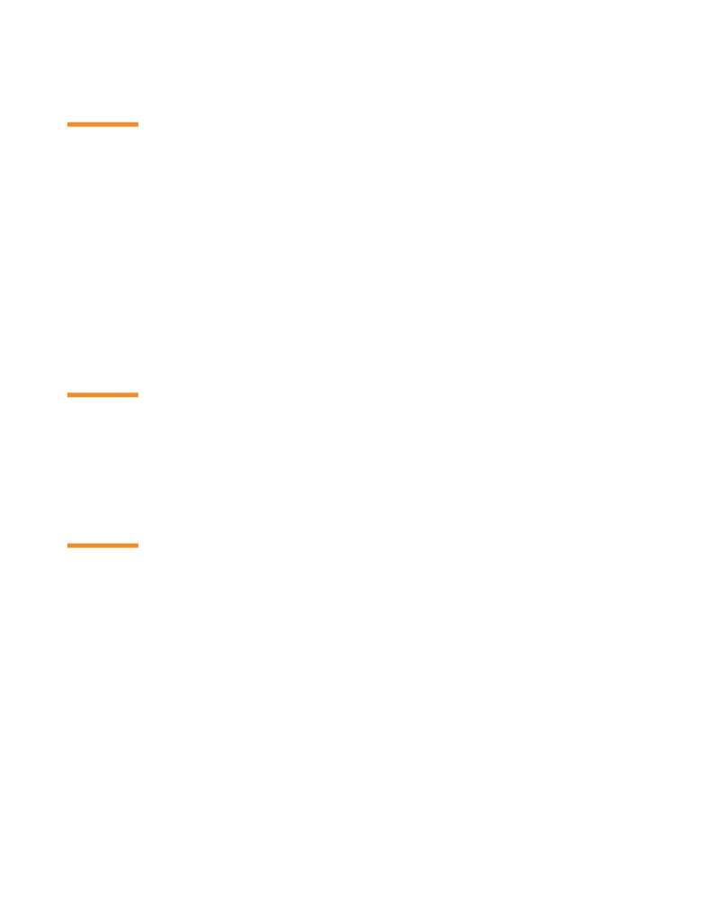
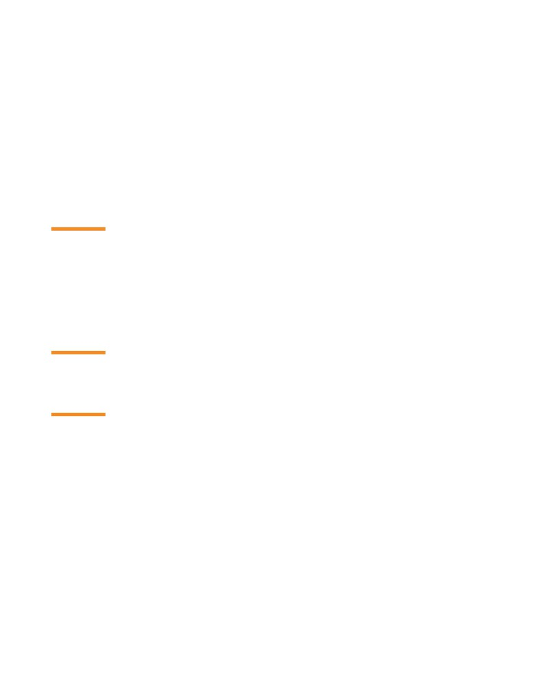

Roza Gizem Kamiloğlu
Postbus 15900, 1001 NK, Amsterdam, the Netherlands
r.g.kamiloglu@uva.nl
+31 625321423
Education
10.2017-
Ph.D. Candidate, Social Psychology, University of Amsterdam, Faculty of Social and
Behavioral Sciences, the Netherlands
Supervisors: Assoc. Prof. Disa Sauter, Prof. Agneta Fischer
2014/16
M.A. Social Psychology, Koç University, College of Social Sciences and Humanities,
Istanbul. GPA: 3.96/4.0
Thesis Title: Autobiographical Memory Sharing and Empathy Elicitation: Guilt, Shame and
Similarity of Experience
Supervisor: Prof. Sami Gülgöz
2009/14
B.A. Psychology, Double Major, Koç University, College of Social Sciences and
Humanities, Istanbul
2009/14
B.S. Physics (Hons), Koç University, College of Sciences, Istanbul
Publications
Research Papers
Kamiloğlu, R. G., & Sauter, D. A. (In preperation). Sounds like a fight: Listeners map spontaneous
Kamiloğlu, R. G., Cong, Y., Sun, R., & Sauter, D. A. (Accepted/In press). Emotions Across Cultures. In
L. Al-Shawaf, & T. K. Shackelford (Eds.), The Oxford Handbook of Evolution and the Emotions. Oxford
Kamiloğlu R.G., Boateng G., Balabanova A., Cao C., Sauter D. A. (2021). Superior communication of
positive emotions through nonverbal vocalisations compared to speech prosody. Journal of Nonverbal
Kamiloğlu, R. G., & Sauter, D. A. (2021). Voice Production and Perception. In O. Braddick (Ed.), Oxford
Research Encyclopedia of Psychology. Oxford University Press.
Kamiloğlu, R. G., Tanaka, A., Scott, S. K., & Sauter, D. A. (2021). Perception of group membership
from spontaneous and volitional laughter. Phil. Trans. R. Soc. B, 20200404.
Roza Kamiloğlu
Page 1 / 5
Kamiloğlu, R. G., Fischer, A. H., & Sauter, D. A. (2020). Good Vibrations: A Review of Vocal Expressions
019-01701-x
Kamiloğlu R.G., Sauter D. A. (2020). Posed and spontaneous nonverbal vocalizations of positive emotions:
Acoustic analysis and perceptual judgments. In Laughter and Other Non-Verbal Vocalisations Workshop,
Kamiloğlu, R. G., Slocombe, K. E., Haun, D. B. M., & Sauter, D. A. (2020). Human listeners’ perception
of behavioural context and core affect dimensions in chimpanzee vocalizations. Proceedings of the Royal
Sauter, D. A., Crasborn, O., Engels, T., Kamiloğlu, R. G., Sun, R., Eisner, F., & Haun, D. B. M. (2020).
Human emotional vocalisations can develop in the absence of auditory learning. Emotion, 20, 1435-
Cemalcilar, Z., Baruh, L., Kezer, M., Kamiloglu, R. G., & Nigdeli, B. (2018). Role of personality traits in
first impressions: An investigation of actual and perceived personality similarity effects on interpersonal
attraction across communication modalities. Journal of Research in Personality, 76,
139-149.
Kamiloğlu, R. G., Smeets, M. A. M., de Groot, J. H. B., & Semin, G. R. (2018). Fear Odor Facilitates
the Detection of Fear Expressions Over Other Negative Expressions. Chemical Senses, 43,
419-
Klein, R. A., Vianello, M., Hasselman, F., Adams, B. G., Adams, R. B., Kamiloğlu, R. G., & et al. (2018).
Many Labs 2: Investigating Variation in Replicability Across Samples and Settings. Advances in Methods
Public Science Engagement
My research has been featured on various media platforms including AFP (Agence France-Presse), DailyMail,
vrt NWS Belgian public broadcaster, Het Nieuwsblad, public radio NPO1 in the Netherlands, and BBC The
Naked Scientist. I have also collaborated with the Dutch popular science magazine Quest to develop an
online experiment on laughter.
Proofreading and Redaction
Kagıtcıbası, C. & Cemalcilar, Z. (2014) Dünden Bugüne İnsan ve İnsanlar, (From Past to Present Human
and Humans; revised ed.), Evrim Publishing.
Roza Kamiloğlu
Page 2 / 5

Thomson, J. B., (2013) İdeoloji ve Modern Kültür, (Ideology and Modern Culture), Dipnot Publishing.
Awards, Scholarships, and Grants
2021
In-kind support grant on project “Different kinds of laughter: A machine learning approach”,
2017
Dancker Daamen Award for Best Research Poster, Dutch Social Psychology Organization
(ASPO)
2014/16
Master graduate student scholarship from Koç University, Istanbul
2015
Best Independent Documentary Award, European Independent Film Festival
2014
Dean’s Honor Roll
2012
Vehbi Koç Scholar Award
2011
Vehbi Koç Scholar Award
2008/14
Full merit scholarship from Koç University in Psychology and Physics
Summer schools and workshops
2021
Workshop on Introduction to Deep Learning, The Netherlans eScience Center, the
Netherlands
2020
Laughter workshop, University of Bielefeld, Germany
2019
Summer school on Practical Mixed Effect Modeling, Radboud University, the Netherlands
2019
Summer school on Computational Social Science (SCSS), ETH Zurich, Switzerland
Research Related Experience
2018/21
Reviewer, Journal of Nonverbal Behavior • Animal Communication •
Philosophical Transactions of the Royal Society B • Motivation and Emotion •
Cognition and Emotion
2016/17
Full-Time Paid Researcher, Utrecht University: Conducting research on olfactory
modality as a medium of emotional communication
2014/16
KURAM Lab Coordinator, Koç University: Coordinating and assisting several projects
2014/16
SIM Lab Research Assistant, Koç University: Working in several projects including
2014/16
CUPESSE Research Assistant, Koç University: Cultural Pathways to Economic Self-
Sufficiency, European Union Project
2015/16
Research Assistant, Prof. Zeynep Cemalcilar, Koç University: Working on an exploratory
Roza Kamiloğlu
Page 3 / 5
reserch project investigating determinants of subjective SES
02-06 2014
Research Assistant, Prof. Nida Bikmen, Denison University: Collecting data for a study
on effects of narrative constructions of group history on intellectual performance
08-09 2013
Internship in Clinical Psychology, Bakirkoy Prof. Dr. Mazhar Osman Neurological
Disorders Training and Research Hospital, Bakirkoy, Istanbul
Teaching Experience
2021
Teacher, Psychological Training: Psychological Research course for second year
Bachelor students, and Emotional Influence for Master students, University of
Amsterdam
2018/21
Supervisor, 2 research master students, 6 master students, 6 bachelor students in
social psychology, University of Amsterdam
2016
Teaching Assistant, Psychology of Testing and Measurement, Koç University
2015
Teaching Assistant, Advanced Research Methods, Koç University
2015
Teaching Assistant, Research Methods, Koç University
2014
Teaching Assistant, Social Psychology, Koç University
Conference Activities
Talks and Poster Presentations
04.2021
Evidence for Phylogenetic Continuity in Nonverbal Vocalisations, Society for Affective
Science, virtual conference
02.2021
Evidence for Phylogenetic Continuity in Nonverbal Vocalisations, Evolution Preconference
SPSP, virtual conference
10.2020
Superior Decoding of positive emotions from nonverbal vocalisations compared to speech
prosody, ASPO, vitual conference
09.2019
What Can Chimpanzee Vocalisations Tell Human Listeners?, EFP/PSGB International
Conference, Oxford, UK
07.2019
Good Vibrations: A Review of Vocal Expressions of Positive Emotions, International Society
for Research on Emotion, Amsterdam, the Netherlands.
05.2019
Is there phylogenetic continuity in emotional vocalizations?, Human behavior and Evolution
Society, 2019, Boston, USA
04.2018
Smelling an “Emotional Fingerprint”, The Consortium of European Research on Emotions,
Glasgow, Scotland, UK
06.2017
Human Body Odors as Emotion Elicitors, Human Olfaction at the Intersection of Language,
Roza Kamiloğlu
Page 4 / 5

Culture and Biology, Max Planck Institute for Psycholinguistics Nijmegen, the Netherlands
07.2016
Autobiographical Memory Sharing as a Resource of Empathy, International Conference on
Memory, Budapest, Hungary
06.2016
Higher Arousal by the Young and for Public Events of Young Age, University of Aarhus,
Autobiographical Memory Research Center, Denmark
02.2016
From Collective Memory to Collective Guilt, Narratives of War, Huizinga Institute
Conference, University of Amsterdam, the Netherlands
01.2016
How Do I Know Where I Stand: Determinants of Social Standing Across Contexts, SPSP
Annual Convention, San Diego, California, USA
Other Experiences
2018/21
Web Designer, Building and editing project websites and the website of Amsterdam
2018/21
Illustrator, Writing and illustrating children’s books and creating project illustrations. Two
of my illustrations are published by Royal Society Publishing as cover images of two-part
2015
Movie Editor, Editor of the documentary Gazi to Gezi - A Stones' Throw Away
Languages
Turkish: native
English: advanced
Dutch: intermediate
Kurdish: intermediate
Computer Skills
Advanced knowledge of R, SPSS, JASP and graphic design applications like PhotoShop and Adobe
Illustrator
Good knowledge of MatLab, Python, Pyschopy, Qualtrics, HTML and tools for acoustic analysis like
PRAAT and openSmile
Roza Kamiloğlu
Page 5 / 5